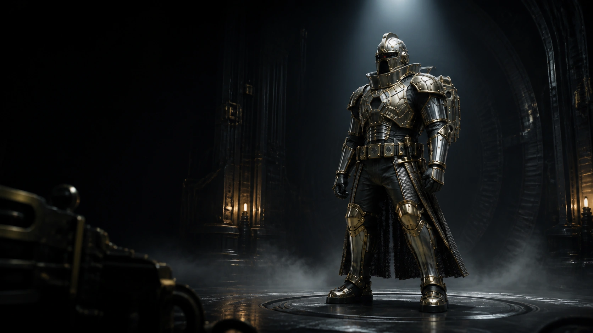

01
LTX 2.5
The Artifact Forge
11.48sWall
Media slot — source run
768×44841 frames8 steps
Warm-cache final showcase run. The audio branch is dropped here on purpose — see the field notes below.
Measured. Tuned. Preserved.
A practical field report on making LTX 2.5, MiniMax H3, and MiniMax Music 3 behave on AMD's Radeon AI PRO R9700.
This project began as a performance investigation and ended as a known-good production stack: measured bottlenecks, selected fixes, documented dead ends, reproducible workflows, and a final session switching between generation models without rebuilding the machine between jobs.

Standing in for the final hero plate. Target slot 16:7 on desktop, 3:2 on mobile — see showcase/media-spec.md.
776×
Model load
931 s → 1.2 s
H3 Qwen3-VL model-load pathology removed with --disable-mmap.
41%
Less wall time
43.78 s → 25.69 s
LTX short-workload result after selecting the 256-token Gemma floor.
24.9%
Faster sampler
29.51 s → 22.15 s
H3 paired Qwen-residency A/B.
These are separate controlled experiments with different boundaries. They are not additive.
The useful question was whether the machine could move between real workloads without turning every model change into another debugging session.
So we ran one final creative session.
Four production workflows, executed back to back in one long-lived ComfyUI process. Every wall time below is the measured time for that run in this sequence — not a best-of, not a cold-start figure carried over from the optimization campaign.
01
The Artifact Forge
11.48sWall
768×44841 frames8 steps
Warm-cache final showcase run. The audio branch is dropped here on purpose — see the field notes below.
02
Machine Cathedral
131.94sWall
608×35239 frames20 steps
The first model change of the session: LTX's Gemma stack out, H3's Qwen3-VL stack in. The longest run on the board, and the only one that had to pay for a full encoder swap.
03
Forge Awakening
49.16sWall
608×35239 frames20 stepsfirst_frame: anchor
The same H3 weights as run 02, now conditioned on the BX-77 anchor frame. Identical resolution, frame count, and step count — and it finished in a little over a third of the time.
04
Signal Against the End
28.48sGeneration wall
14.99sAudio
Cover plate pending — wide slot, 2.4:1 desktop / 3:2 mobile
Sleeve — placeholderFLAC, 14.99 s. Open source file →

Waveform, rendered from the FLAC output.
“Carry the signal, deny the end…” Chorus — lyric excerpt

seed 811208020 steps · res_multistep · simplecfg 1.5 · top-k 50max duration 15.0 s
Roughly 19.8 s of the 28.48 s wall is the autoregressive lyric/text conditioner; the DiT itself is about 3.6 s. See the Music 3 baseline.
05
Observatory
81.47sWall
608×35239 frames20 stepsref: anchor, match
A different H3 transformer than runs 02 and 03, swapped in against the same anchor. This is the run that cost the most to get working, and none of that cost was the GPU's fault.
06
Signal Vault
23.62sWall
768×44841 frames8 steps
Back to LTX after four intervening model changes. Run 01's 11.48 s came off an already-warm LTX cache; 23.62 s is what the round trip actually cost.
Everything above is a run that worked. These are the ones that didn't, kept because a showcase that only records successes is not evidence.
Two of the golden workflow files predate schema changes in the MiniMax H3 nodes. Both passed /prompt validation and then failed at execution, because ComfyUI validates against the static input table and only resolves the real signature later.
image; the live node wants first_frame. One failed job, then a clean run.ref_images is a V3 Autogrow input, so the prompt JSON key has to be the dotted dynamic path ref_images.ref_image_0, not the bare slot name and not the legacy ref_image. Six failed attempts before the key format was traced through comfy_api/latest/_io.py. audio_vae and ref_image_size also had to be supplied.Both were fixed in showcase copies of the workflows. The files under production/ were not modified.
VAEDecodeAudio tensor-shape mismatchFor certain latent shapes the audio decode raises a size mismatch at dimension 2 and does so deterministically — an identical retry with a fully warm cache fails identically. Runs 01 and 06 ship video-only for this reason. Not a hardware fault, not intermittent.
The first attempt at run 01 executed cleanly and produced a valid file of entirely the wrong subject: the production workflow's placeholder prompt text was never overridden for that queued job. It was caught by looking at the extracted frames rather than trusting the status code. The bad file is archived rather than deleted, and run 01 was requeued with the correct prompt.
The six runs executed in one long-lived ComfyUI process across one mid-session restart (around 14:58 local, between run 04 and runs 05/06). That restart is why the in-memory /history API could confirm runs 03, 05, and 06 directly and the earlier runs had to be reconciled against on-disk sidecars and file timestamps.
Peak VRAM is recorded as NA for every run except 02. It was not sampled for the manually queued runs, and it is not estimated here.
Check mmap before blaming your SSD. --disable-mmap.
H3 encoder 931 s → 1.2 s
Check whether Qwen is still resident before touching the sampler.
Paired sampling A/B 29.51 s → 22.15 s
You may be processing a 1,024-token minimum sequence you never asked for.
Selected: LTX_GEMMA_MIN_LENGTH=256
The work is in the autoregressive conditioner, not the diffusion transformer.
Measured: ~19.8 s AR loop vs ~3.6 s DiT
SHA-256, truncated. Full digests, sizes, and workflow fingerprints live in the manifest and are re-checked by the preflight script on every run.
| File | Role | SHA-256 (16) |
|---|---|---|
| ltx-2.5-22b-distilled-transformer-comfy-int8-convrot | LTX 2.5 DiT | c4279eeff115cbea |
| gemma4-12b-with-proj-ltx-2.5-comfy-int8-convrot | LTX 2.5 text encoder | 09a89e084de1a149 |
| ltx-2.5-video-vae-bf16 | LTX 2.5 video VAE | 847e14ca7f3355de |
| minimax_h3_fl2va_pruned_fp8_scaled | H3 first/last-frame transformer | 12944c1f7791637e |
| minimax_h3_ref2va_pruned_fp8_scaled | H3 reference transformer | f86f2f79ebd2d76e |
| qwen3vl_32b_minimax_h3_fp8 | H3 Qwen3-VL encoder | 5e1127e510a30099 |
| minimax_h3_video_vae_fp16 | H3 video VAE | 7c1f131492e7edda |
| minimax_h3_audio_vae_fp32 | H3 audio VAE | 8e505d95dd1561d4 |
| minimax_music3_dit_int8_convrot | Music 3 DiT | d6b959633e69899f |
| minimax_music3_text_encoder_pruned_int8_convrot | Music 3 lyric encoder | 010b7416d2336a08 |
| minimax_music3_dav | Music 3 audio codec | 2a32155b769be014 |
Selected production configswhat shipped, and why
Production manifesthashes, flags, fingerprints
Update gatewhat must not move
Verify the machine matches the recorded state before anything else. The preflight checks hardware, runtime versions, applied patches, model hashes, and workflow fingerprints in one pass.
python3 scripts/production-preflight.pyREADMEthe repository
AGENTS.mdrules for automated work
TROUBLESHOOTING.mdsymptom-first guide
production-preflight.pythe verifier
production/manifest.jsonthe recorded state
update-gate.mdbefore you upgrade anything
Closing plate pending — wide banner, 3:1 desktop / 3:2 mobile
Plate 02 — placeholderBX-77 // End of field report